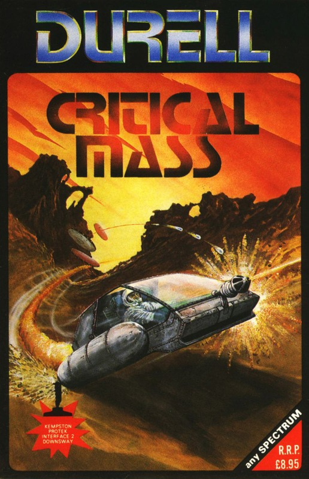
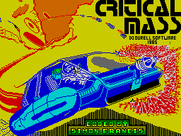
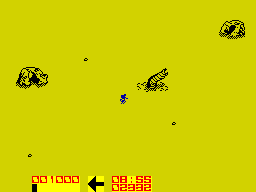
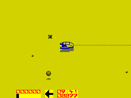

Critical Mass


{kind=link}

| Publisher: | Durell |
| Price: | £8.95 |
| Year: | 1985 |
| Source: | CRASH, Issue 23 |

Once again, your mission to is save life, the universe and everything. Alien forces have captured an anti matter conversion plant which supplies power to colonists in a planetary system. The aliens are threatening to turn the anti-matter plant onto ‘self-destruct’ — which would wipe out the entire planetary system and a couple of neighbouring stars as well — unless they receive unconditional surrender. Unconditional surrender is a fate worse than death, so it’s up to you to travel across the surface of the asteroid on which the power plant is sited, infiltrate the alien enemy’s positions and disable the anti-matter converter before it achieves Critical Mass.

You are in control of a rocket-propelled hover craft with high speed strike attack capabilities, according to the armaments manufacturer’s sales blurb. The craft doesn’t make contact with the ground, and thus avoids seismic detection, and is equipped with a powerful laser device. It’s defended with a force field which protects the ship against collisions or alien attacks — but every collision with the force field drains a little more energy, and the field will eventually implode, destroying the ship if energy gets too low. Your energy status is displayed on a horizontal bar to the left of the screen and is replenished if you can avoid bumping into things or firing for a while. Too many collisions, or indeed too much rapid firing, and your ship turns into a collection of bouncing pixels...
For the benefit of less skilful pilots, a further protection device detects when your craft is about to implode, and ejects you before the event. All is not lost, however, for your character then uses the emergency jet pack to travel to a dome shaped energy pod where a new ship can be found. On the journey, the shipless pilot is unprotected and must avoid contact with rocks and other life forms which drain energy. An indicator, in the form of a large arrow, shows you the direction you should be travelling in, and in this phase you have to try to avoid large sandworm-like nasties that pop up out of the ground.

Jetpack in the centre of the screen. A
nasty sandworm has just popped its
head up close to a quartzite rocky
outcrop. CRITICAL MASS from Durell.
Your mission is to travel east with all speed, to the power unit. During the early phases of the game you will only encounter alien long distance raiders plus unfused mines, but as you progress through the zones you will encounter increasingly hostile opposition including fused and guided mines. Once you have travelled through all of the zones you will find yourself near the power plant. This is protected by a score of nasties such as amorphous clouds of molecular disorientation. To enter the power plant you will have to disable the force field gates by shooting the front of the turret that is between them. This is not easy and with the addition of the clouds you are likely to end up spinning off into the distance.
Once inside the plant you will find yourself being drawn into an energy beam — this you must destroy by shooting the centre of the pyramid shaped energy concentrator in the middle of the device. Failure leads to vapourisation for you and your craft.
The whole game is played against the clock, which ticks off the time remaining before Critical Mass is achieved. Points are collected for doing away with alien defences on the way to saving the universe.
CRITICISM

MASS from Durell. Don’t be mislead by
appearances — the cuddly looking
round sponge thing at the bottom
of the screen is deadly.
‘Remember Scuba Dive way back in issue 2 of CRASH? Even then we said that Durell had set new standards in graphics; now they have gone one better and produced a game that has great graphics, good sound and compelling game play. Critical Mass takes the form of a fast action shoot em up that is totally addictive. The movement of your craft reminds me very much of Vortex’s Cyclone where you have to wrestle with the controls when you encounter a problem. The sound is pretty good for a Spectrum with great blowing up effects and a nice tune at the start of the game. The inclusion of an automatic eject is quite a good idea, though the game could have been made a bit more exciting if you had to operate the ejection system yourself. If you’re into shoot em ups, then you couldn’t do much better than buy this.’
‘This struck me as being pretty boring when I first encountered it — a touch of the ‘nice graphics, shame about the game syndrome’. On further playing I started to discover things deeper within the game which were highly original and excellent. The graphics on this are of a very high standard, and the scrolling is something of a miracle for a Spectrum. If you like shoot em ups then you can’t go wrong with this one, it’s one of the best in my memory.’
‘The music on this game in the opening screens is great but when you start the game the first thing to strike you are the amazing graphics, which are so detailed. The only problem that I could see was that the screen tended to empty at times. Some of the graphics are a touch on the small side, but this doesn’t detract from the overall impression of excellence. The thing that really surprised me was the handling of the craft; the inertial effects produced by hitting rocks and firing your laser are wonderful. They are some of the best on any Spectrum game that I’ve played. Controlling the craft adds an extra dimension to the game that, when combined with the graphics and frantic game play, makes for an excellent game.’
COMMENTS
| Control keys: | Z/X left and right, Q accelerate, A fire, plus definable key option |
| Joystick: | Kempston, Cursor, Interface 2 and Downsway |
| Keyboard play: | Very responsive |
| Use of colour: | Only two colours and black used but attribute problems are avoided |
| Graphics: | Good and detailed but at times the screen gets a bit blank |
| Sound: | Limited during play but nice tune to start off with |
| Skill levels: | 3 |
| Screens: | Vast scrolling area |
| General rating: | Very good shoot em up that is fast, fun and furious |
| Use of computer: | 92% |
| Graphics: | 93% |
| Playability: | 92% |
| Getting started: | 90% |
| Addictive qualities: | 89% |
| Value for money: | 90% |
| Overall: | 90% |